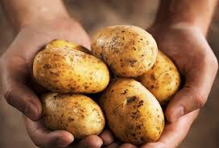
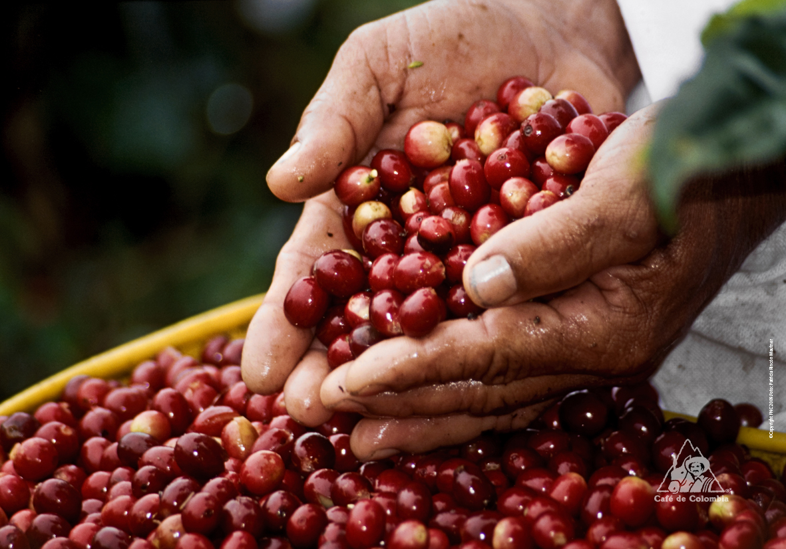
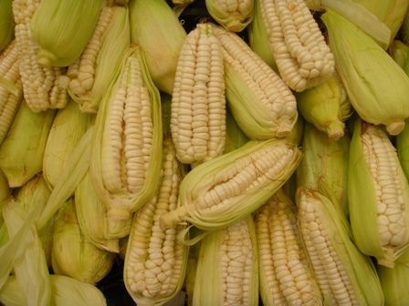

La ciudad de Cajamarca está ubicada en la región Quechua a 2.720 msnm, en la margen este de la cadena oriental de la Cordillera de los Andes. Se extiende en la parte noroeste del valle de Cajamarca que forman los ríos Mashcon y Chonta, en las faldas de los cerros Cumbe, La Shicuana y Cajamarcorco.
Según la Oficina de Información Agraria de Cajamarca, la vocación productiva agrícola de la zona norte es para el café, arroz, yuca y cacao; en las zonas centro y sur cultiva papa, maíz amarillo duro, maíz amiláceo, frijol grano seco y trigo.
PAPA
CAFE
MAIZ
